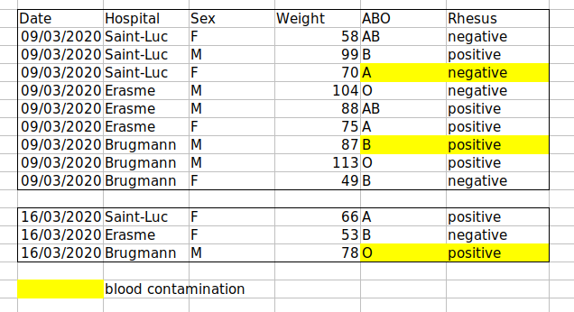
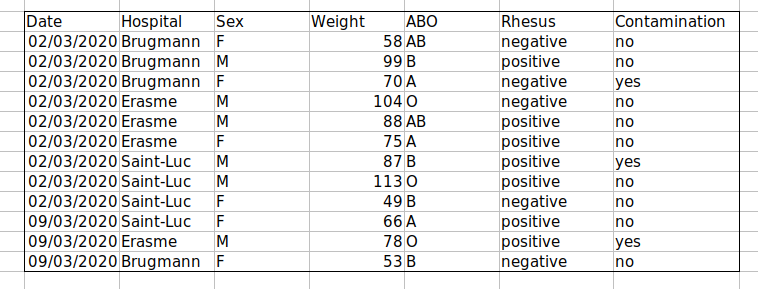

使用电子表格组织数据
最后更新于 2026-11-07 | 编辑此页
预计用时： 60 分钟
概述
问题
- 如何整理表格数据？
学习目标
- 了解电子表格及其优缺点。
- 如何在电子表格中格式化数据，以实现有效的数据利用？
- 了解常见的电子表格错误及其修正方法。
- 按照整洁数据原则整理您的数据。
- 了解基于文本的电子表格格式，例如逗号分隔 (CSV) 或制表符分隔 (TSV) 格式。
本集基于 Data Carpentries 的 Data Analysis and Visualisation in R for Ecologists 课程。
电子表格软件
问题
- 使用电子表格进行良好数据组织的基本原则是什么？
目标
- 描述组织数据的最佳实践，以便计算机能够充分利用数据集。
要点
- 良好的数据组织是任何研究项目的基石。
良好的数据组织是研究项目的基石。大多数研究人员使用电子表格存储数据或进行数据录入。电子表格软件是设计数据表和处理非常基础的数据质量控制功能的实用图形界面。另请参阅 Broman and Woo (2018).
电子表格大纲
电子表格适合数据录入。因此，我们有大量数据存储在电子表格中。作为研究人员，你的大部分时间都将花在这个“数据整理”阶段。这虽然不算有趣，但却是必要的。我们将教你如何思考数据组织，并介绍一些更高效的数据整理实践。
本课程不会教你的内容
- 如何在电子表格中进行统计
- 如何在电子表格中进行绘图
- 如何在电子表格程序中编写代码
如果您想这样做，O’Reilly 出版的 Head First Excel 是一本很好的参考书。
为什么我们不教使用电子表格进行数据分析？
在电子表格中进行数据分析通常需要大量的手动操作。如果你想更改参数或使用新数据集运行分析，通常必须全部手动重新操作。（我们知道可以创建宏，但请参阅下一点。）
此外，当你想要回顾工作或有人询问分析详情时，也很难追踪或复现在电子表格软件中进行的统计或绘图分析。
市面上有许多电子表格软件。由于大多数参与者将 Excel 作为主要的电子表格软件，本课程将采用 Excel 示例。另一款可使用的免费电子表格软件是 LibreOffice。不同软件之间的命令可能略有差异，但基本原理是一致的。
电子表格软件涵盖了研究人员需要具备的许多能力。我们可以用它们来：
- 数据输入
- 数据整理
- 数据的筛选与排序
- 统计学
- 绘图
电子表格软件使用表格来表示和显示数据。以表格形式呈现的数据也是本章的主题，我们将学习如何以标准化的方式将数据组织成表格，以确保后续分析的高效性。
挑战：与邻座讨论以下要点
- 你在研究、课程或家中使用过电子表格吗？
- 你在电子表格中会进行什么样的操作？
- 你认为电子表格适用于哪些场景？
- 你是否曾在电子表格软件中不小心做了某些事情，从而感到沮丧或难过？
电子表格的问题
电子表格适用于数据录入，但实际上，我们使用电子表格软件的用途远不止于数据录入。我们用它们来创建用于发表的数据表，生成汇总统计数据，并制作图表。
在电子表格中生成发表用的表格并非最佳选择——通常在为发表进行数据表格格式化时，我们报告关键汇总统计数据的方式并非旨在作为数据阅读，且往往涉及特殊的格式设置（合并单元格、创建边框、美化排版）。我们建议您在文档编辑软件中完成此类操作。
后两项应用——生成统计数据和图表——应谨慎使用：由于电子表格程序具有图形化的拖放特性，复现你的操作步骤（更不用说还原他人的操作）可能非常困难，甚至是不可能的，尤其是当你的统计数据或图表需要进行更复杂的计算时。此外，在电子表格中进行计算时，很容易不小心对多个相邻单元格应用略有不同的公式。而使用像 R 或 SAS 这样基于命令行的统计程序时，除非是故意为之，否则几乎不可能对数据集中的某个观测值应用计算，而不对另一个观测值应用。
在电子表格中格式化数据表
问题
- 如何在电子表格中格式化数据，以实现有效的数据利用？
目标
描述电子表格中数据输入和格式化的最佳实践。
采用最佳实践在电子表格中排列变量和观测值。
要点
绝不要修改原始数据。在进行任何更改之前，务必先创建副本。
在纯文本文件中记录清洗数据的所有步骤。
按照整洁数据原则整理您的数据。
最常见的错误是将电子表格软件当作实验笔记本来使用，也就是说，依赖上下文、页边注释、数据和字段的空间布局来传递信息。作为人类，我们（通常）能够解读这些内容，但计算机并非如此看待信息，除非我们向计算机解释每一个细节的含义（而这可能很困难！），否则它将无法理解我们的数据是如何关联在一起的。
借助计算机的力量，我们可以以更高效、更快速的方式管理和分析数据，但要发挥这种力量，我们必须对数据进行准备，使计算机能够理解它们（而计算机非常严格）。
这就是为什么从一开始就建立格式规范的表格至关重要——甚至在你开始输入第一次初步实验的数据之前就应该这样做。数据组织是研究项目的基石。它会影响你在整个分析过程中处理数据的难易程度，因此在进行数据录入或设置实验时，值得仔细考虑。在电子表格中，你可以采用不同的设置方式，但其中一些选择可能会限制你在其他程序中处理数据的能力，或者影响你 6 个月后的自己或你的合作者处理数据的便捷程度。
注意： 数据录入和数据分析的最佳布局/格式（以及软件和界面）可能各不相同。考虑到这一点至关重要，理想情况下应将两者之间的转换自动化。
记录您的分析过程
在使用电子表格进行数据清洗或分析时，很容易导致最终的表格与初始表格看起来大相径庭。为了能够复现您的分析结果，或在审稿人或导师要求进行不同分析时查明您具体做了什么，您应当
创建一个包含清洗或分析后数据的新文件。不要修改原始数据集，否则你永远不知道最初的状态！
记录您在清洗或分析过程中采取的步骤。您应当像记录实验中的任何步骤一样记录这些步骤。我们建议您将这些步骤记录在与数据文件位于同一文件夹的纯文本文件中。
这可能是一个电子表格设置示例：

在今天的练习中，请将这些原则付诸实践。
虽然版本控制超出了本课程的范围，但您可以参考 Carpentries 关于 ‘Git’ 的课程，学习如何对数据进行版本控制。此外，您还可以参阅这篇 博文 了解快速入门教程，或参阅 Perez-Riverol et al. (2016) 以了解更面向研究的使用场景。
电子表格中的数据结构
使用电子表格软件处理数据的基本原则：
- 将所有变量放在列中 —— 即你要测量的项目，例如“重量”或“温度”。
- 将每条观测值放在独立的行中。
- 不要将多项信息合并在同一个单元格中。虽然有时看起来像是一件事，但请思考一下，如果只能通过这种方式来使用或排序这些数据，是否真的可行。
- 保持原始数据原样 —— 不要对其进行修改！
- 将清洗后的数据导出为文本格式，例如 CSV（逗号分隔值）格式。这能确保任何人都能使用这些数据，且大多数数据存储库都对此有要求。
例如，我们有一组来自比利时布鲁塞尔多家医院就诊的患者数据。他们记录了就诊日期、医院、患者的性别、体重和血型。
如果我们这样记录数据：

问题在于 ABO 和 Rhesus 组位于同一个 Blood
类型列中。因此，如果他们想查看 A 组的所有观测值，或者按 ABO
组查看体重分布，使用这种数据设置会很棘手。如果我们将 ABO 和 Rhesus
组分在不同的列中，你就会发现这样会容易得多。

在建立数据表时，一项重要规则是：列用于变量，而行用于观测值：
- 列是变量
- 每行对应一个观测值
- 单元格是单个值
挑战：我们将处理一个杂乱的数据集，并描述如何对其进行清洗。
点击此链接下载一个杂乱的数据集。
在电子表格软件中打开数据。
你可以看到这里有两个选项卡。数据包含 2020 年第一波和第二波 COVID-19 期间，在布鲁塞尔各家医院记录的各种临床变量。如你所见，3 月和 11 月两波期间的数据记录方式有所不同。现在你是该项目的负责人，希望能够开始分析这些数据。
与身旁的人一起，找出这份电子表格有哪些问题。同时讨论清理第一波和第二波标签页，并将它们整合到一个电子表格中的具体步骤。
重要提示： 请不要忘记我们的第一条建议：为清洗后的数据创建新文件（或新标签页），绝不要修改原始（原始）数据。
完成这项练习后，我们将小组讨论这组数据出了什么问题，以及你们将如何修复它。
挑战：在清理好数据后，请回答以下问题：
- 共有多少名男性和女性参与了这项研究？
- 已测试多少个 A、AB 和 B 型？
- 同上，但忽略被污染的样本？
- 已检测多少例 Rhesus + 和 -？
- 已测试多少名通用供血者 (O-)？
- AB型男性的平均体重是多少？
- 各家医院分别检测了多少个样本？
一份极佳的参考资料，尤其是关于 R 脚本编写方面的，是 Tidy Data 论文 Wickham (2014).
常见的电子表格错误
问题
- 在电子表格中格式化数据时常见的挑战有哪些，又该如何避免？
目标
- 识别并解决常见的电子表格格式问题。
要点
- 避免在单个电子表格中使用多个表格。
- 避免将数据分散在多个选项卡中。
- 将零记录为零。
- 使用适当的空值来记录缺失数据。
- 不要使用格式来传递信息或美化电子表格的外观。
- 将注释放在单独的列中。
- 在列标题中记录单位。
- 每个单元格仅包含一项信息。
- 避免在列标题中使用空格、数字和特殊字符。
- 请避免在数据中使用特殊字符。
- 将元数据记录在单独的纯文本文件中。
无论是您自己的数据，还是来自合作者或互联网的数据，都可能存在一些需要留意的潜在错误。如果您了解这些错误，以及它们可能对后续数据分析和结果解读产生的负面影响，这可能会激励您和项目成员努力避免这些错误。对电子表格中数据格式的处理方式进行微调，对于数据清洗和分析的效率与可靠性将产生重大影响。
- 使用多个表格
- 使用多个标签页
- 不填充零
- 使用有问题的空值
- 使用格式传递信息
- 使用格式美化数据表
- 在单元格中放置注释或单位
- 在单元格中输入多项信息
- 使用有问题的字段名
- 在数据中使用特殊字符
- 在数据表中包含元数据
使用多个表格
一种常见的做法是在一个电子表格中创建多个数据表。这会让计算机产生混淆，所以千万不要这样做！当你在一个电子表格中创建多个表时，你是在为计算机建立错误的关联，因为计算机将每一行视为一次观测。此外，你可能会在多个地方使用相同的字段名，这将使数据更难以清理成可用的形式。下面的示例说明了这个问题：

在上述示例中，计算机会看到（例如）第 4 行，并假设所有 A-AF 列都指代同一个样本。实际上，这一行代表了四个不同的样本（四个不同采集日期——5 月 29 日、6 月 12 日、6 月 19 日和 6 月 26 日——每天一个样本 1），以及其中两个样本的一些计算得出的汇总统计数据（平均值 (avr) 和测量标准误 (SEM)）。其他行同样存在问题。
使用多个选项卡
但工作簿标签页呢？这看起来是组织数据的一种简单方法，对吧？嗯，是也不是。当你创建额外的标签页时，你就没能让计算机识别出数据中已有的关联（你必须引入电子表格应用程序特有的函数或脚本来确保这种关联）。举个例子，假设你为每次测量的日期分别创建了一个标签页。
这样做不妥，原因有两点：
如果你每次进行测量时都开始在新标签页中记录数据，那么你更容易在数据中不小心引入不一致之处，而且
即便你能够防止所有不一致之处的混入，在分析数据之前，你仍需增加一个额外步骤，因为你必须将这些数据合并为一个单一的数据表。你必须明确告知计算机如何合并这些标签页——而且如果标签页的格式不统一，你甚至可能需要手动操作。
下次输入数据时，如果你打算创建另一个标签页或表格，请问问自己是否可以通过在原电子表格中添加另一列来避免创建这个标签页。在我们的杂乱数据文件示例中，我们使用了多个标签页，但现在你已经看到了如何重新组织数据以跨标签页进行整合。
在实验过程中，您的数据表可能会变得非常长。如果您无法在电子表格顶部看到表头，就更难输入数据。但请不要重复表头行。表头行很容易与数据混淆，从而在日后引发问题。相反，您可以冻结列标题，这样即使电子表格行数很多，它们依然可见。
未填写零
也许在测量某项指标时，结果通常是零，比如调查中观察到兔子的次数。既然该列大部分都是零，为什么还要特意在其中写上数字零呢？
然而，电子表格中的零与空白单元格有所不同。对于计算机而言，零实际上是数据。你测量或计数了它。空白单元格则意味着该项未被测量，计算机会将其解释为未知值（也称为 null 值或缺失值）。
电子表格或统计软件很可能会误读你打算作为零的空白单元格。通过不输入观测值，你实际上是在告诉计算机将该数据表示为未知或缺失（null）。这可能会导致后续计算或分析出现问题。例如，包含一个 null 值的一组数字的平均值始终为 null（因为计算机无法推断缺失观测值的数值）。因此，将零记录为零，而将真正的缺失数据记录为 null 至关重要。
使用有问题的空值
示例：使用 -999 或其他数值（或零）来表示缺失数据。
解决方案：
在数据集中，空值的表示方式有所不同，原因有几种。有时，测量设备会自动记录令人困惑的空值。如果是这种情况，你几乎无能为力，但可以在分析前使用 OpenRefine 等工具进行数据清洗来解决。另一种情况是，使用不同的空值来表示数据缺失的不同原因。这是需要记录的重要信息，但实际上相当于用一个列来记录两项信息。就像 使用格式传递信息 一样，在这种情况下，最好创建一个名为 ‘data_missing’ 的新列，并使用该列来记录不同的原因。
无论原因如何，如果未知或缺失的数据被记录为 -999、999 或 0，就会产生问题。
许多统计软件无法识别这些值旨在表示缺失（null）值。这些值如何被解释，取决于您用于分析数据的软件。使用一个定义明确且一致的 null 标识符至关重要。
空白单元格（适用于大多数应用程序）和 NA（适用于 R）都是不错的选择。 White et al. (2013) 在其文章中介绍了不同软件中表示空值的合适方式：

使用格式传递信息
示例：高亮显示应从分析中剔除的单元格、行或列，并留出空白行以表示数据的分隔。

解决方案：创建一个新字段来编码哪些数据应被排除。

使用格式化使数据表看起来美观
示例：合并单元格。
解决方案：如果不小心，为了美观而对工作表进行格式化，可能会影响计算机识别数据中关联的能力。合并单元格会导致统计软件无法读取您的数据。请考虑重新构建数据结构，以便在组织数据时无需合并单元格。
在单元格中放置注释或单位
大多数分析软件无法识别 Excel 或 LibreOffice 的注释，且会对数据单元格中放置的注释产生混淆。如上文在格式化部分所述，如果您需要在单元格中添加备注，请创建另一个字段。同样，请勿在单元格中包含单位：理想情况下，您在同一列中放置的所有测量值应使用相同的单位；但如果出于某种原因并非如此，请创建另一个字段并指定该单元格所使用的单位。
在单元格中输入多项信息
示例：在同一个单元格中记录 ABO 和 Rhesus 组，例如 A+, B+, A-, …
解决方案：不要在一个单元格中存储多条信息。这将限制您分析数据的方式。如果您需要这两项测量值，请在数据表中设计相应的布局以包含这些信息。例如，分别设置一列用于 ABO 组，另一列用于 Rhesus 组。
使用有问题的字段名
请选择具有描述性的字段名称，但要注意不要包含空格、数字或任何类型的特殊字符。空格可能会被将空白字符作为分隔符的解析器误读，且某些程序不支持以数字开头的文本字符串作为字段名称。
下划线 (_)
是空格的良好替代方案。考虑使用驼峰命名法（例如：ExampleFileName）以提高可读性。请记住，目前有意义的缩写在
6
个月后可能不再显而易见，但不要将名称写得过长。在字段名称中包含单位可避免混淆，并使他人能够轻松理解您的字段。
示例
| 良好的名称 | 良好的替代方案 | 避免 |
|---|---|---|
| Max_temp_C | MaxTemp | Maximum Temp (°C) |
| Precipitation_mm | Precipitation | precmm |
| Mean_year_growth | MeanYearGrowth | Mean growth/year |
| sex | sex | M/F |
| weight | weight | w. |
| cell_type | CellType | Cell Type |
| Observation_01 | first_observation | 1st Obs |
在数据中使用特殊字符
示例：在撰写笔记时，你将电子表格软件视为文字处理软件，例如直接从 Word 或其他应用程序中复制数据。
解决方案：这是一种常见的做法。例如，在单元格中编写较长文本时，人们经常在电子表格中加入换行符、长破折号等。此外，在从 Word 等应用程序复制数据时，格式和特殊的非标准字符（如左对齐和右对齐的引号）也会被包含在内。在将这些数据导出到编程/统计环境或关系型数据库时，可能会出现危险情况，例如行被截断以及抛出编码错误。
通用最佳实践是避免添加换行符、制表符和垂直制表符等字符。换句话说，将文本单元格视为一个只能包含文本和空格的简单 Web 表单。
在数据表中包含元数据
示例：您在数据表的顶部或底部添加图例，用以说明列的含义、单位、异常情况等。
解决方案：记录数据相关信息（“元数据”）至关重要。在收集和分析数据集时，你可能对其了如指掌，但几个月、一年或更长时间后，你能否还记得例如变量“sglmemgp”代表“组中的单个成员”，或者你用于转换变量或创建衍生变量时使用的具体算法，可能性很小。
此外，他人可能出于多种原因希望检查或使用您的数据——例如为了理解您的研究结果、验证您的研究结果、审阅您提交的出版物、复现您的结果、设计类似的研究，甚至是为了存档您的数据以便他人访问和重复使用。虽然数字数据在定义上是机器可读的，但理解其含义则是人类的工作。在研究的收集和分析阶段记录数据的重要性无论如何强调都不为过，尤其是当您的研究将成为学术记录的一部分时。
然而，元数据不应包含在数据文件本身中。与论文中的表格或补充文件不同，元数据（以图例形式呈现）不应包含在数据文件中，因为此类信息并非数据，且将其包含在内可能会干扰计算机程序对数据文件的解析。相反，元数据应作为独立文件存储在与数据文件相同的目录下，最好采用纯文本格式，并使用能清晰地将其与数据文件关联的文件名。由于元数据文件采用纯文本格式，您还可以在其中编码注释、单位、关于缺失值如何编码的信息等，这些内容对于记录至关重要，但可能会干扰数据文件的格式。
此外，文件或数据库级别的元数据描述了构成数据集的文件之间如何关联；它们采用何种格式；以及它们是取代之前的文件，还是被之前的文件取代。文件夹级别的 readme.txt 文件是记录项目中所有文件和文件夹的经典方式。
（关于元数据的文字改编自爱丁堡大学 EDINA 和数据库提供的在线课程 Research Data MANTRA。MANTRA 采用 知识共享 署名 4.0 国际许可协议 授权。）
导出数据
问题
- 我们如何将电子表格中的数据导出，以便于后续应用？
目标
- 将电子表格数据存储为通用文件格式。
- 将数据从电子表格导出为 CSV 文件。
要点
存储在常用电子表格格式中的数据通常无法被数据分析软件正确读取，从而导致数据出现错误。
将数据从电子表格导出为 CSV 或 TSV 等格式，可使其成为大多数程序都能一致使用的格式。
将待分析的数据以 Excel 默认文件格式（*.xls 或
*.xlsx —— 取决于 Excel 版本）存储，并非良策。为什么？
因为这是一种专有格式，且未来可能不再有用于打开该文件的技术（或该技术将变得十分罕见），从而导致文件难以打开，甚至无法打开。
其他电子表格软件可能无法打开以专有 Excel 格式保存的文件。
不同版本的 Excel 处理数据的方式可能有所不同，从而导致不一致。日期 是一个关于数据存储不一致的典型案例，相关资料已十分详尽。
最后，越来越多的期刊和资助机构要求您将数据存放在数据存储库中，且其中大多数不接受 Excel 格式。数据需要采用下文讨论的格式之一。
上述要点同样适用于其他格式，例如 LibreOffice / Open Office 使用的开放数据格式。这些格式并非静态的，且不同软件包对其解析方式各异。
将数据以通用、开放且静态的格式存储有助于解决这一问题。可以尝试使用制表符分隔（tab-delimited，或称为 TSV）或逗号分隔（comma-delimited，或称为 CSV）格式。CSV 文件是纯文本文件，列之间由逗号分隔，因此被称为“逗号分隔值”或 CSV。与 Excel/SPSS 等文件相比，CSV 文件的优势在于，我们几乎可以使用任何软件（包括 TextEdit 或 NotePad 等纯文本编辑器）来打开并读取 CSV 文件。CSV 文件中的数据也可以轻松导入到其他格式和环境中，例如 SQLite 和 R。在处理 CSV 文件时，我们不必受限于某个昂贵程序的特定版本，因此它是实现最大可移植性和持久性的理想格式。大多数电子表格程序都可以轻松保存为 CSV 等分隔文本格式，尽管在导出文件时可能会弹出警告。
若要将在 Excel 中打开的文件保存为 CSV 格式：
- 从顶部菜单中选择“文件”和“另存为”。
- 在“格式”字段中，从列表中选择“逗号分隔值” (
*.csv)。 - 再次确认文件名和想要保存的位置，然后点击“保存”。
关于向后兼容性的重要提示：您可以使用 Excel 打开 CSV 文件！

关于 R 和 xls 的说明：有一些 R
包可以读取 xls 文件（以及 Google 电子表格）。甚至可以访问
xls 文档中的不同工作表。
但是
- 其中一些仅在 Windows 上可用。
- 这相当于将（简单但手动的）导出为
csv替换为数据分析 R 代码中额外的复杂性/依赖项。 - 数据格式化的最佳实践依然适用。
- 真的有充分的理由说
csv（或类似形式）不够用吗？
关于逗号的注意事项
在某些数据集中，数据值本身可能包含逗号 (,)。在这种情况下，您使用的软件（包括 Excel）很可能会错误地将数据以列形式显示。这是因为作为数据值一部分的逗号会被解释为分隔符。
例如，我们的数据可能如下所示：
species_id,genus,species,taxa
AB,Amphispiza,bilineata,Bird
AH,Ammospermophilus,harrisi,Rodent, not censused
AS,Ammodramus,savannarum,Bird
BA,Baiomys,taylori,Rodent在记录 AH,Ammospermophilus,harrisi,Rodent, not censused
中，taxa 的值包含一个逗号
(Rodent, not censused)。如果我们尝试将上述内容导入
Excel（或其他电子表格程序），会得到如下结果：

taxa 的值被分成了两列（而非放入单一列 D
中）。这可能会引发一系列进一步的错误。例如，多出来的那一列会被解释为一个包含大量缺失值（且没有正确标题）的列。此外，第
3 行记录（即 ‘taxa’ 的值包含逗号的那一行）中列 D
的值现在是不正确的。
如果您想以 csv
格式存储数据，且预计数据值中可能包含逗号，可以通过将值放在引号 (““)
中来避免上述问题。按照此规则，我们的数据可能如下所示：
species_id,genus,species,taxa
"AB","Amphispiza","bilineata","Bird"
"AH","Ammospermophilus","harrisi","Rodent, not censused"
"AS","Ammodramus","savannarum","Bird"
"BA","Baiomys","taylori","Rodent"现在将此文件作为 csv 在 Excel
中打开将不会导致出现额外列，因为 Excel
仅将位于引号之外的逗号作为分隔符。
或者，如果您处理的数据包含逗号，在使用电子表格时可能需要使用另一种分隔符1。在这种情况下，可以考虑使用制表符作为分隔符，并使用 TSV 文件。TSV 文件可以像 CSV 文件一样从电子表格软件导出。
如果您正在处理一个现有的数据集，其中数据值不包含在 “” 中，但同时使用逗号作为分隔符和数据值的一部分，那么您可能正面临数据清洗方面的重大问题。如果您处理的数据集包含数百或数千条记录，手动清洗（无论是从数据值中删除逗号，还是将值放入引号 - “” 中）不仅会耗费大量时间，还可能导致您不小心引入许多错误。
数据集清洗是许多科学领域面临的主要问题之一。其处理方法几乎总是取决于具体情境。不过，采用自动化方式清洗数据是一个良好的实践，例如编写并运行脚本。Python 和 R 课程将为你提供开发相关脚本技能的基础。
总结

典型的数据分析工作流程如上图所示，其中数据会经过反复的转换、可视化和建模。这一迭代过程会重复多次，直到数据被充分理解。然而，在许多实际案例中，大部分时间都花在数据的清洗和准备上，而非实际的分析与理解上。
一种敏捷的数据分析工作流——即对“转换/可视化/建模”循环进行多次快速迭代——只有在数据格式可预测，且无需查看或修复数据即可对其进行分析时，才是可行的。
- 良好的数据组织是任何研究项目的基石。
这在将逗号用作小数点分隔符的欧洲国家尤为重要。在这种情况下，CSV 文件的默认值分隔符将是分号 (;)，或者值将被系统性地加引号。↩︎